使用小程序
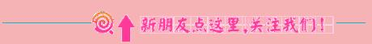
这次的作品，用智能车车轮和食人鱼高亮LED打造 的旋律灯。
首先最重要的也是最简单的，就是电路图了，电路图可以自己设计哦！
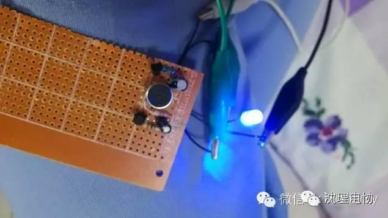
焊接的时候注意控制大小哦
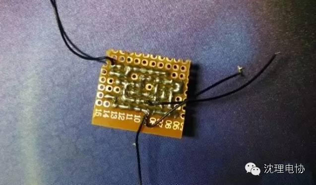
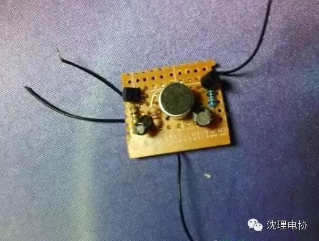
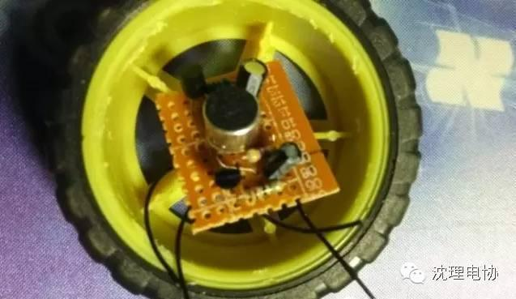
然后我想了想该用什么电池呢？本来想把电池也放在里面，但是担心空 间不 够，而且用纽扣电池LED亮度不够所以我就把电源线引出来了，用锂电 18650供电。做了声控的电路板，接下来还要做第二块，就是那五个LED的板子，把轮胎的套胶先取下来：
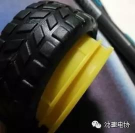
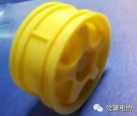
把电路板放上去先描一个洞
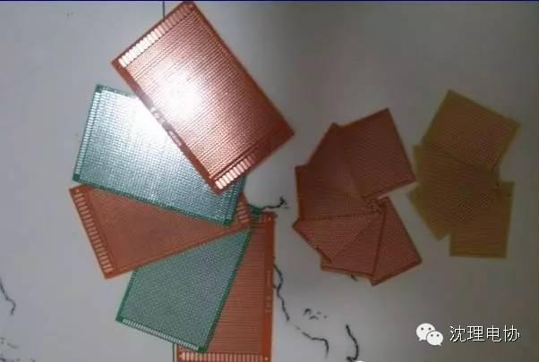
剪裁好电路板后，把食人鱼灯珠焊上去，注意要根据轮胎廓的空隙仔细选定焊的位置，这里选择食人鱼LED主要是因为它的亮度比较不错，散光效果也很好，正是我需要的！
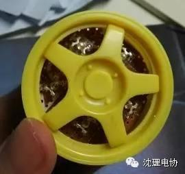
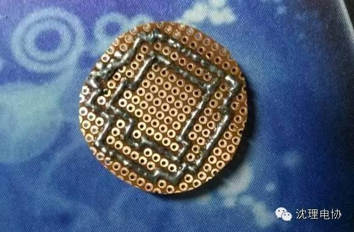
接下来要做的就是用木板（我的是轻木板）切割成和轮胎一样大的圆，等会封底用。这里说个好用的方法，就是用圆规的尖头去割木板，效率很高滴
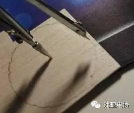
然后就是组装了，把轮胎侧面打一个洞把电源线掏出来
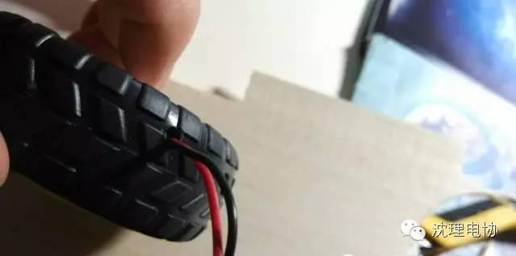
用热熔胶固定LED灯板
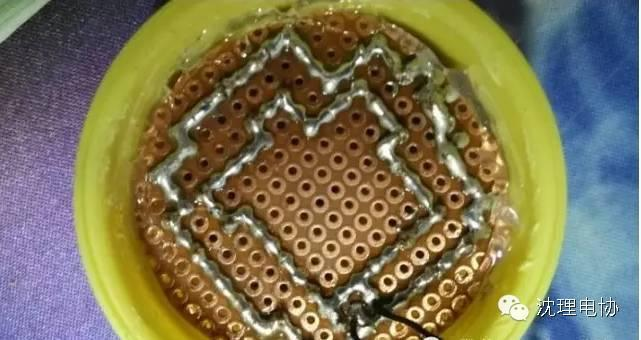
然后把声控电路板叠在上面，这个就不用粘了，因为空间正 好，所以他就被挤在里面了，不会晃动。
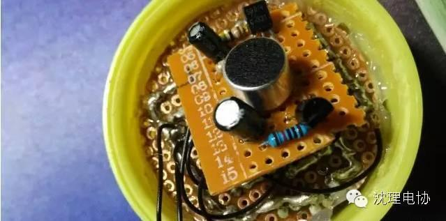
然后把轻木板做的底板放上去，用手压好，然后用热熔胶粘住。再上油漆，更完美了！
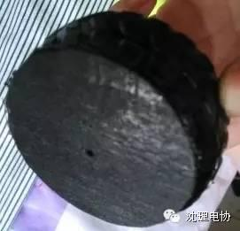
接下来就是成品了！
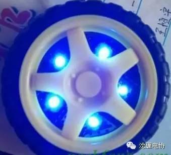